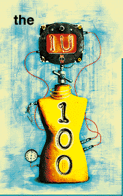

|

1996. It's finally almost over. Excuse us while we try to catch our collective breath. It's been an amazing year on the Internet. And we've had an incredible time trying to cover it all. The Internet was everywhere, far and near, high and low. Every other TV commercial had a URL tacked on the end. Both comic heroine Cathy and Friends' Chandler found love online. Story-thirsty local TV newscasters played up sensational tales of online abductions. Magazine racks were stuffed to the gills with new Net publications. Stock racers had URLs printed on their spoilers. The Net even became a campaign issue. There's really nothing like working a 12-hour day, covering nothing but the Internet, and then coming home only to be bombarded with reminders of it everywhere. It's like the old adage about working in a whorehouse (pardon the crude, but accurate analogy): sometimes it's hard to get excited. This was the year that Bill Gates finally realized this Internet thing wasn't going to go away, and so decided that he might as well own it, too. Hell, he even took one of our editors. And the hype. Every day there was a new product/site that was going to revolutionize the way the world spun. One thing this year taught us is, don't believe the hype. Oh, don't get us wrong, we still believe the Internet is a wondrous place. But it's still about 10/90 proposition. Little wheat, mostly chaff. When there were only a few thousand sites on the Web, it was much easier to collect the wheat to make cut-and-dry editorial decisions. Nowadays, with thousands of new sites a day, and hundreds of product announcements and strategic alliances a week, we have trouble even finding the wheat, let alone gathering enough to make a bread stick. Do you follow? Still, there's the nagging question of how to round-up the year, for you, the loyal reader. Working off of an outdated story line-up lurking in the bowels of our server, our art director went ahead months ago and commissioned the IU 100 trophy seen replicated on our cover and (above). So we knew we had to pick 100 something, but what? We thought about the 100 best sites on the Web, but that seemed too pedestrian. Then we considered the 100 most influential people on the Net? That idea sounded like a sure cure for insomnia. We also tossed around the idea of leaving the pages blank as some sort of pretentious protest for some unknown cause. Then it dawned on us, why not make the IU 100 a round-up of the most Notorious, Ridiculous, Infamous, Ludicrous, Outrageous, Egregious (think we used the Thesaurus feature in Word?) Humorous, Scandalous and Plain Old Wacky Events, Issues, People, Sites and Trends on the Internet in 1996?
|
|||||